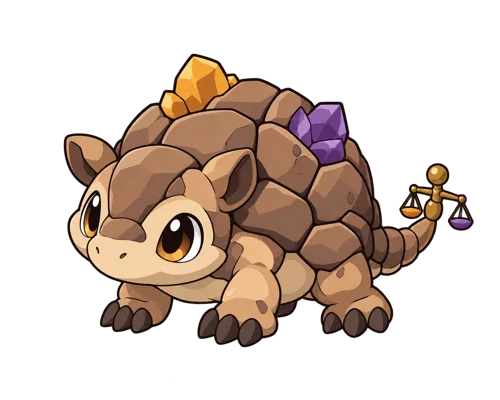

りかモン 画像接続テスト
学校のネットワークに接続した生徒用PCで、このページを開いてください。
画像を読み込んでいます…

モンスターが表示され、上に「画像表示OK」と出れば、この配信先の画像を読み込めています。
画像はHTMLとは別のWebPファイルです。ログインは不要です。テスト版：2026-10-14学校のネットワークに接続した生徒用PCで、このページを開いてください。
画像を読み込んでいます…

モンスターが表示され、上に「画像表示OK」と出れば、この配信先の画像を読み込めています。
画像はHTMLとは別のWebPファイルです。ログインは不要です。テスト版：2026-10-14